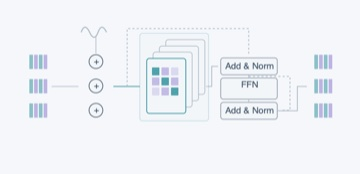
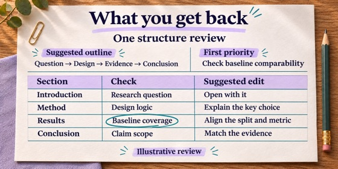
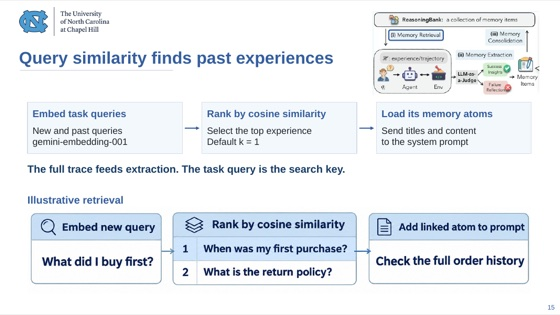
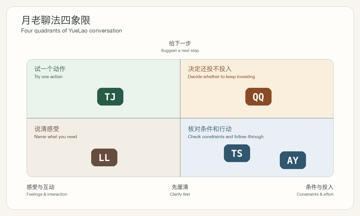
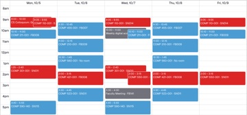

GitHub
43 stars
Research workflows and public code.
I study how agents learn continually from experience and stay reliable over long horizons.
 Honors Carolina undergraduate at UNC–Chapel Hill
Honors Carolina undergraduate at UNC–Chapel Hill
I major in computer science and economics and minor in mathematics.
I work with Shashank Srivastava (Lab) and Snigdha Chaturvedi (Lab). I’m writing my honors thesis in economics with Peter R. Hansen.
A first search can find a clue and miss the supporting passage. A second search uses that clue to look for the passage.
The retriever ranks short claims and gives the model the full passages they came from.
POISE uses Shapley-based comparisons to estimate each operator’s contribution when a compound agent’s outcomes are noisy.
An LLM reads table rows rewritten as short scenes and scores the columns. Those scores reweight the inputs to a tabular model.
Explore 64 neural architectures and mechanisms through diagrams and quizzes. Compare related models, follow prerequisites, and pick up where you left off in the same browser. Source

Browse your local skill library and compare instructions that overlap. Check the source, version, and destination before installing, then restore a backed-up version if needed.
Turn a paper PDF into an argument map you can review offline. Follow claims to highlighted passages, flag missing comparisons, and approve suggested edits one at a time.

Turn a paper into a timed research talk using its original figures. Choose which mechanism and results to cover, then rehearse with notes for each slide.

Try a Chinese-language conversation prototype with eight dialogue styles. The release includes a demo you can run locally and example conversations linked to the original clips.

A UNC COMP 523 team project for browsing course schedules and finding available classrooms. It combines 25Live schedules with Google Calendar bookings to flag double bookings and rooms that are too small.
